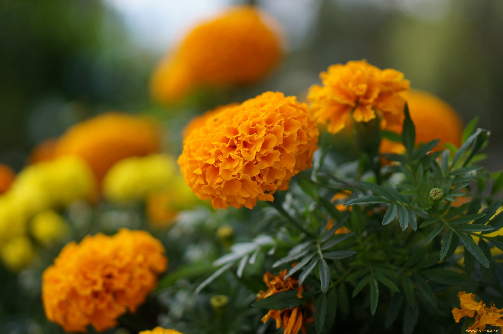

Бархатцы, или антуриумы, — это экзотические комнатные растения с яркими и красивыми округлыми цветками и блестящими листьями. Они популярны как элемент интерьера и часто используются для создания уютной атмосферы в доме.
Уход за бархатцами требует регулярного полива, умеренного освещения и поддержания влажности. Эти цветы имеют символическое значение и ассоциируются с любовью, страстью и прекрасными чувствами.
